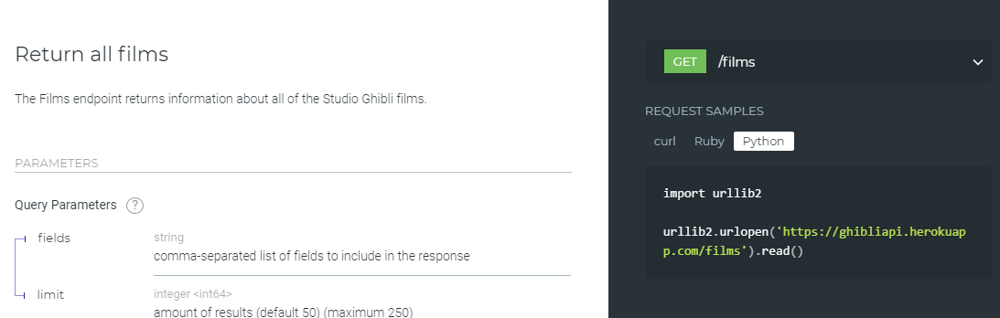

Modularité
Cours
La modularité consiste à découper un projet en plus petit programmes afin de :
- Faciliter la réutilisation de bouts de codes sans avoir à les réécrire ou dupliquer.
- Faciliter la réalisation d’un gros projet en sous projets plus simples.
- Donner une structure pour faciliter la compréhension du code et sa maintenance.
Modules et bibliothèques (rappels de 1ère)
Cours
Un module est un programme Python regroupant des fonctions et des constantes (des variables dont la valeur ne change pas1) ayant un rapport entre elles.
Un module doit être importé dans un programme avant de pouvoir utiliser ses fonctions et ses constantes.
Une bibliothèque (ou package en anglais) regroupe des fonctions, des constantes et des modules.
import
Pour importer un module dans un programme, il faut utiliser l'instruction import en début de programme :
Pour appeler une fonction ou utiliser une constante d'un module il faut écrire le nom du module suivi d'un point « . » puis du nom de la fonction ou de la constante.
 Prendre soin d’enregistrer ce programme dans le même répertoire que le fichier « mesfonctions.py ».
Prendre soin d’enregistrer ce programme dans le même répertoire que le fichier « mesfonctions.py ».
Il est aussi possible donner un alias à un module pour le renommer avec un nom plus simple à écrire, par exemple pour utiliser mf au lieu de mesfonctions :
Cours
Pour importer un module nom_module, il faut écrire en début de programme l’instruction :
import nom_module
puis pour utiliser une fonction nom_fonction() de ce module :
nom_module.nom_fonction()
Pour importer un module nom_module en lui donnant un alias nom_alias, il faut écrire en début de programme l’instruction :
import nom_module as nom_alias
puis pour utiliser une fonction nom_fonction() de ce module :
nom_alias_module.nom_fonction()
La fonction help() permet de savoir ce que contient un module :
from … import …
Il existe une autre méthode pour importer des fonctions ou constantes depuis un module. Admettons que le module mesfonctions contienne des dizaines de fonctions, mais que nous ayons uniquement besoin dans notre programme de la fonction est_premier, dans ce cas il est préfèrable d'importer uniquement cette fonction plutôt que tout le module en utilisant l'instruction `from mesfonctions import est_premier.
À noter :
Ici on ne met pas le préfixe «
mesfonctions.» devant le nom de la fonctionest_premier.
On peut aussi donner un alias à une fonction :
from mesfonctions import est_premier as estprems
et utiliser ensuite la fonction estprems().
Cours
Pour importer une fonction nom_fonction() depuis le module nom_module, il faut écrire en début de programme l’instruction :
from nom_module import nom_fonction
puis pour utiliser cette fonction :
nom_fonction()
Pour importer une fonction nom_fonction() en lui donnant un alias nom_alias depuis le module nom_module, il faut écrire en début de programme l’instruction :
from nom_module import nom_fonction as nom_alias
puis pour utiliser cette fonction :
nom_alias()
Il est aussi possible d'importer plusieurs fonctions d’un même module séparées par des virgules :
voire même toutes les fonctions d'un module en tapant «* » à la place du nom de la fonction à importer.
Mais cette dernière utilisation est vivement déconseillée, hormis dans des cas très particuliers par exemple des programmes très courts, car il peut y avoir des conflits entre des fonctions qui ont le même nom. Pour s’en convaincre, imaginons un programme écrit en utilisant l'instruction pow(1, 2, 3) qui fonctionnerait parfaitement jusqu'à ce qu'une modification necessitant le module math ajoute l'instruction from math import * en début de programme et génère une erreur inattendue 2 là où il n'y en avait pas.
Python offre des centaines de modules avec des milliers de fonctions déjà programmées. Il y a différents types de modules :
- ceux que l’on peut faire soi-même (comme
mesfonctions). - ceux qui sont inclus dans la bibliothèque standard de Python comme
randomoumath, - ceux que l’on peut rajouter en les installant séparemment comme
numpyoumatplotlib.
De l'utilité de la fonction 'main()'
On a vu auparavant la définition de la fonction main() contenant le programme principal, suivi du bout de code suivant :
Cette instruction conditionnelle vérifie si une variable appelée __name__ est égale à '__main__' et dans ce cas exécute la fonction main().
L’interpréteur Python définit la variable __name__ selon la manière dont le code est exécuté :
-
directement en tant que script, dans ce cas Python affecte
'__main__'à__name__, l'instruction conditionnelle est vérifiée et la fonctionmain()est appelée ; ou alors -
en important le code dans un autre script et dans ce cas la fonction
main()n’est pas appelée.
En bref, la variable __name__ détermine si le fichier est exécuté directement ou s'il a été importé.3
Modules Python
Python offre des centaines de modules avec des milliers de fonctions déjà programmées. Il y a différents types de modules :
- ceux que l’on peut faire soi-même (comme mesfonctions).
- ceux qui sont inclus dans la bibliothèque standard de Python comme random ou math,
- ceux que l’on peut rajouter en les installant comme numpy ou matplotlib,
| module | Description |
|---|---|
math |
Fonctions mathématiques. |
random |
Fonctions aléatoires. |
matplolib.pyplot |
Tracés de courbes et grpahiques. |
numpy |
Permet de faire du calcul scientifique. |
numpy |
Permet de faire du calcul scientifique. |
time |
Fonctions permettant de travailler avec le temps. |
turtle |
Fonctions de dessin. |
doctest |
Execute des tests ecrits dans la docstring d’une fonction. |
La fonction dir permet d’explorer le contenu d’un module :
>>> import math
>>> dir(math)
['__doc__',
'__loader__',
'__name__',
'__package__',
'__spec__',
'acos',
'acosh',
'asin',
…
En plus de la documentation en ligne, la fonction help donne les spécifications d’une fonction.
>>> help(math.cos)
Help on built-in function cos in module math:
cos(...)
cos(x)
Return the cosine of x (measured in radians).
API
Cours
Une API (Application Programming Interface) est un ensemble de règles et de protocoles qui permettent à différents logiciels de communiquer entre eux. Elle définit les méthodes et les formats d'échange de données que les programmes peuvent utiliser pour interagir.


Il existe de nombreux types d'API mais le principe de base est toujours le même : deux applications informatiques peuvent intéragir sans que l'une ne connaîsse le fonctionnement interne de l'autre. Il suffit que la documentation décrive précisément les règles d'utilisation de l'API.Par exemple, en Python, pour utiliser une fonction d'un module externe, il suffit de connaître sa spécification (son nom, les paramètres et ce qu'elle retourne), il est inutile de savoir comment elle fonctionne.
Une API peut prendre différentes formes, telles que:
-
API Web: Une API Web permet aux applications de communiquer via Internet en utilisant les protocoles HTTP et HTTPS.
-
API de système d'exploitation: Les systèmes d'exploitation, tels que Windows, macOS et Linux, fournissent des API qui permettent aux développeurs de créer des applications pour interagir avec le système et les périphériques.
-
API de bibliothèque: Les bibliothèques logicielles fournissent des API qui permettent aux développeurs d'utiliser certaines fonctionnalités ou fonctionnalités spécifiques sans avoir à comprendre les détails internes de leur mise en œuvre.
-
API de matériel: Certains matériels, comme les imprimantes, offrent également des API qui permettent aux logiciels d'interagir avec eux de manière standardisée.
Les API jouent un rôle essentiel dans le développement de logiciels car elles facilitent l'intégration de différentes parties d'une application ou de différents services pour créer des systèmes plus complexes et puissants.

Prenons pour exemple l'utilisation de l'API Web fournie par le Studio Ghibli pour récupérer des données sur ses films : https://ghibliapi.vercel.app/ .
Observons la documentation : La section FILMS fournit l'URL du point d’accès à l’API, https://ghibliapi.vercel.app/films et trois exemples de requêtes faites en curl, Ruby et Python.
Juste en dessous (ou en cliquant sur le lien donné), on peut observer les données qui vont être envoyées par l’API. Elles sont au format JSON.
Rappel
JSON (JavaScript Object Notation) est un format de données textuelles dérivé de la notation des objets en JavaScript. Comme XML, JSON permet de représenter de l’information structurée. Un fichier JSON se présente sous forme de listes et de dictionnaires (clé/valeur).
Commençons par importer ces données dans un fichier (noter que la fonction urllib.request.urlopen() remplace l’ancienne fonction urllib2.urlopen() donnée dans l’exemple de requête4).
>>> import urllib.request
>>> url = 'https://ghibliapi.vercel.app/films'
>>> request = urllib.request.urlopen(url).read()
Les données sont importées dans un fichier binaire (en python un fichier binaire se présente sous la forme b'….').
>>> type(request)
<class 'bytes'>
>>> print(request)
b'[\n {\n "id": "2baf70d1-42bb-4437-b551-e5fed5a87abe",\n "title": "Castle in the Sky",\n "description": "The orphan Sheeta inherited a mysterious crystal that links her to the mythical ...
On peut maintenant utiliser le module json pour manipuler ces données dans un format plus adapté :
import urllib.request
import json
url = 'https://ghibliapi.vercel.app/films'
request = urllib.request.urlopen(url).read()
data = json.loads(request.decode())
print(data)
Cette fois on a obtenu un tableau de dictionnaire. On peut facilement l’exploiter, par exemple :
for movie in data:
print(movie['title'])
Prenons un autre exemple d'appel d'une API Windows en utilisant la bibliothèque ctypes.
import ctypes
# Pour utiliser l'API Windows User32.dll pour les fonctions de gestion de fenêtres
user32 = ctypes.windll.user32
# Définir les types de données pour la fonction MessageBox
user32.MessageBoxW.argtypes = (ctypes.c_void_p, ctypes.c_wchar_p, ctypes.c_wchar_p, ctypes.c_uint)
user32.MessageBoxW.restype = ctypes.c_int
# Afficher une boîte de dialogue MessageBox de l'API
result = user32.MessageBoxW(0, "Bonjour depuis Python!", "Titre de la boîte de dialogue", 1)
-
Par exemple la valeur de \(\pi\) dans le module
math. ↩ -
La fonction standard Python
pow()prend trois paramètres alors que la fonctionpow()du modulemathn'en a que deux ! L'import defrom math import *a importé la seconde fonction probablement à l'insu du programmeur. ↩ -
On peut facilement se convaincre de l’utilité de la fonction
main()en écrivant le programme qui affiche la décomposition d’un nombre en facteurs premiers sansmain()dans le fichier « mesfonctions.py » :Lorsque pour utiliser la fonctionest_premierle module est importé dans un autre programme avecimport mesfonctions, toute la suite du programme de la décomposition d’un nombre en facteurs premiers est exécuté automatiquement. ↩ -
Voir https://docs.python.org/3/library/urllib.request.html. ↩